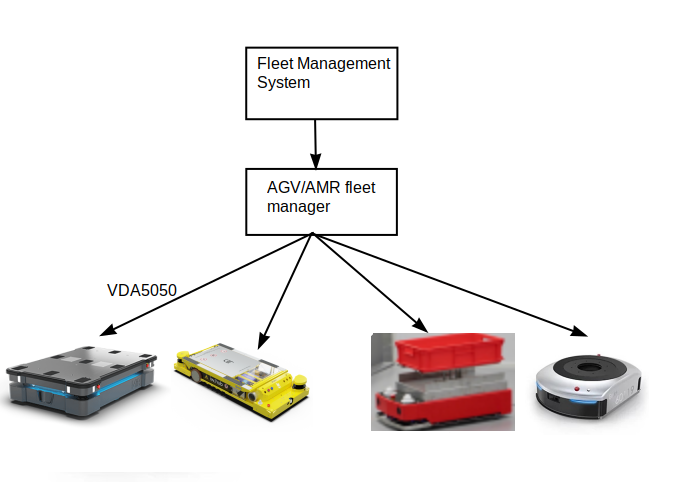
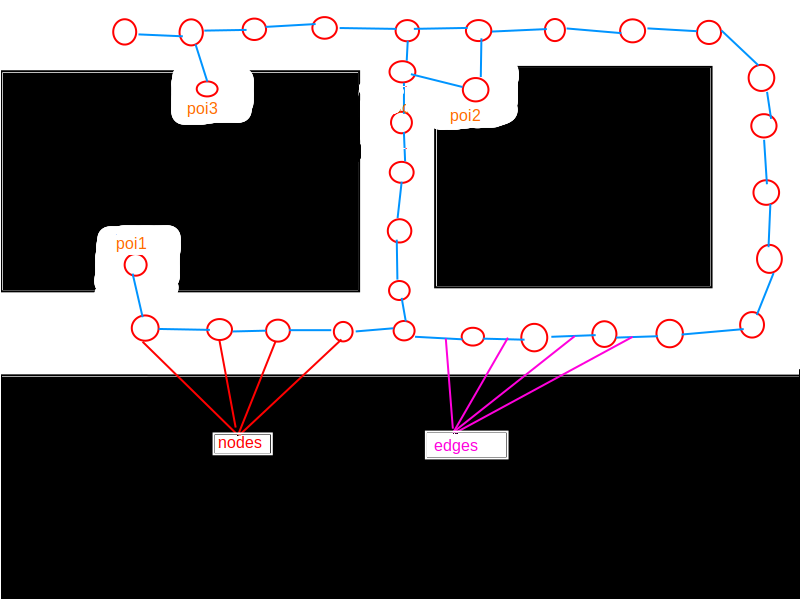
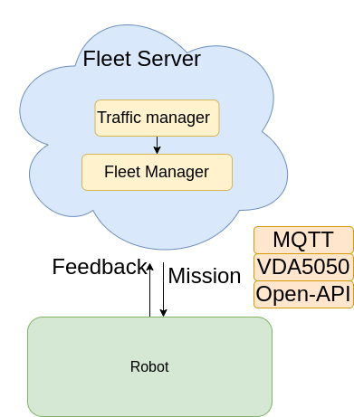
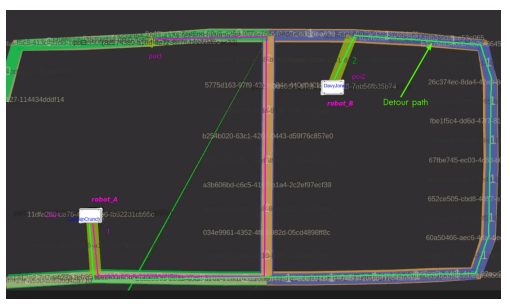
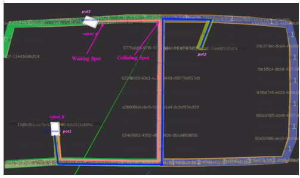
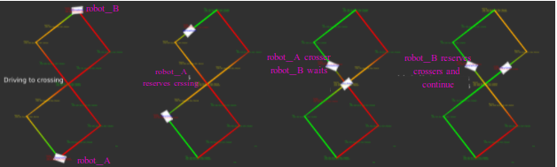
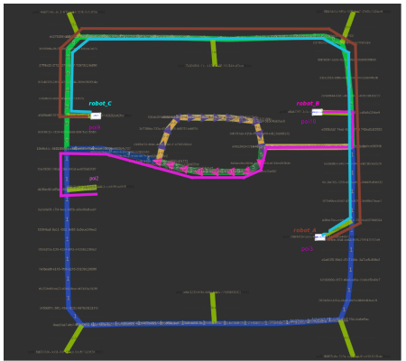
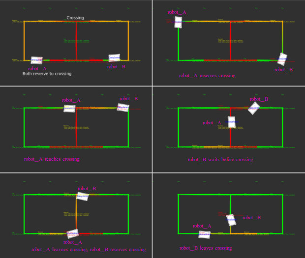

Industrial warehouses and smart factories increasingly deploy fleets of Autonomous Mobile Robots (AMRs) from multiple vendors — but getting them to share narrow corridors and intersections without collision or deadlock is a hard, unsolved coordination problem.
This thesis, carried out at Node Robotics GmbH (a Fraunhofer IPA spin-off), presents a centralized traffic management system built on top of a topological graph representation of the environment. The system proactively detects path conflicts, generates collision-free detour routes where possible, and falls back to intelligent waiting strategies when rerouting is infeasible — all communicated to heterogeneous robot fleets via the VDA5050 standard protocol over MQTT.

Existing traffic managers relied on hard-coded rules on fixed graphs and delegated collision avoidance entirely to each robot's local planner. This broke down in narrow corridors where two robots would book overlapping paths and deadlock — with no mechanism to detect or resolve the conflict proactively.
The environment is modelled as a topological graph — sections, corridors, crossings, and Points of Interest (POIs) — derived from a metric occupancy grid map. The traffic manager operates on this graph to make proactive, robot-aware routing decisions before issuing VDA5050 orders.

may_cross logic).
Robots following the same direction are correctly allowed through.
The system sits inside the Fleet Server and consists of two tightly coupled layers communicating via MQTT / VDA5050:

The algorithm was validated across four distinct multi-robot scenarios in RViz simulation, and subsequently deployed on real MiR100 and Geek+ robots. Each scenario demonstrates a different conflict resolution strategy:





The thesis establishes a solid foundation with clear extension points: real-world deployment in full-scale factory environments, integration of a local planner for static obstacle awareness within the traffic manager, distance- or mission-critical priority scheduling, and scaling to fleets beyond three robots across larger and more complex graph topologies.
Detailed algorithm design, implementation, and evaluation across all test scenarios.
View Full Report ← Back to Projects